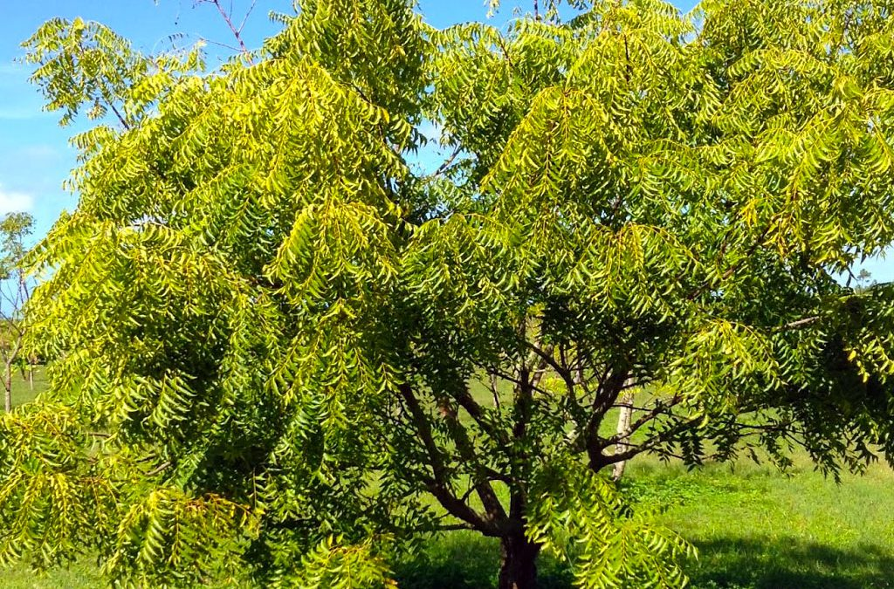

About Trees
The Neem tree, also known as Azadirachta indica, is a fast-growing evergreen tree native to the Indian subcontinent. It has been widely used in traditional medicine and is known for its various medicinal properties. Neem leaves, bark, and oil are commonly used for their antifungal, antibacterial, and insecticidal properties.
Tree Images
